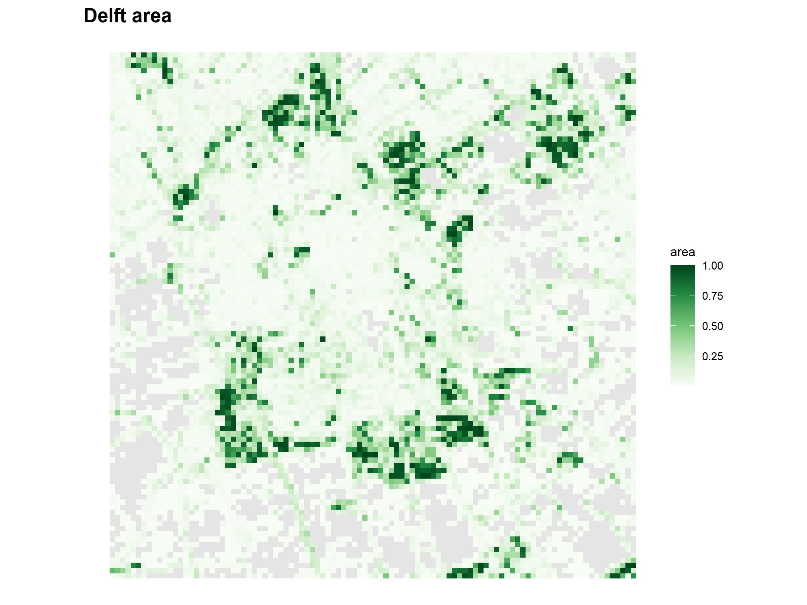
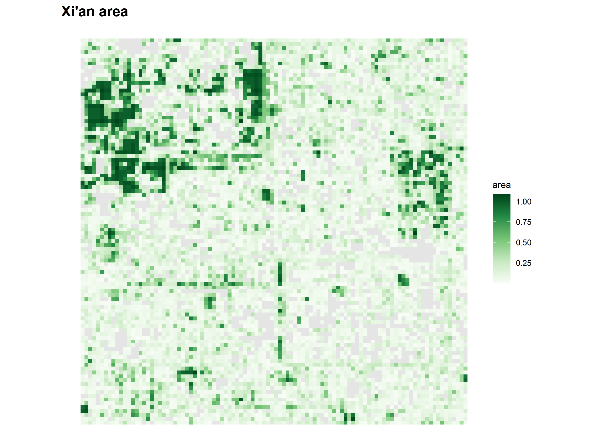
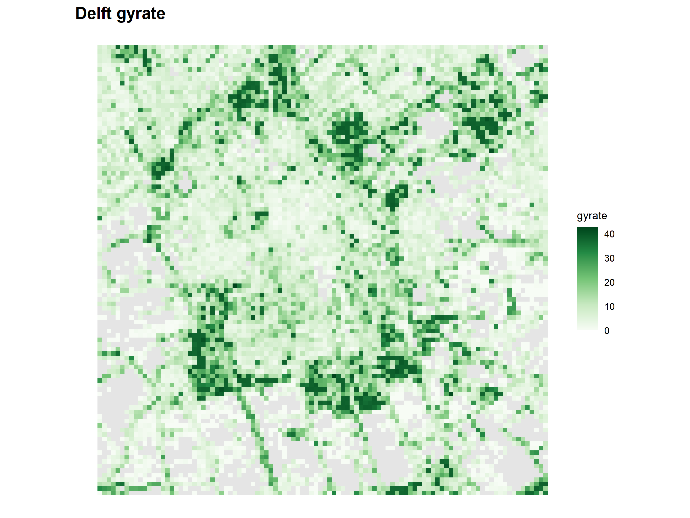
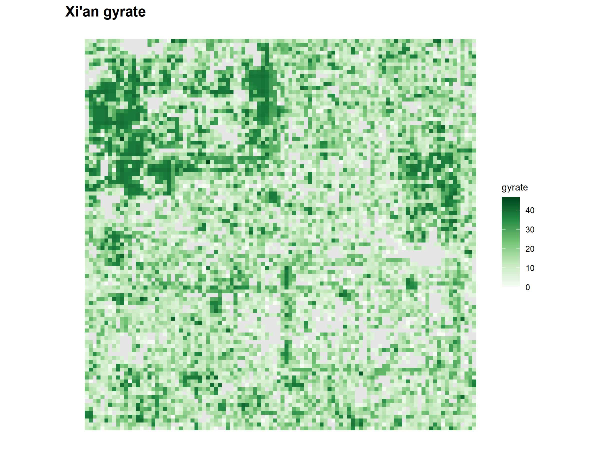
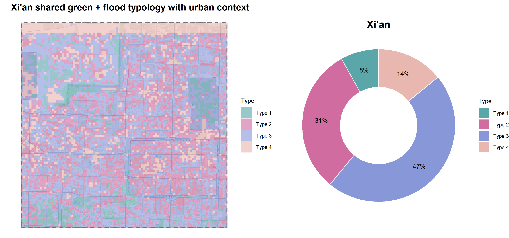

Appendix A — Additional outputs and unused material
This appendix shows a selection of additional maps and outputs that were produced during the project but were not used as main figures in the report. More complete output files can be found in the GitHub repository, especially in the folders data/results and figures/results.
The materials included here are mainly intermediate or supporting outputs. They help document the workflow, but the main analysis in the report is based on the selected metrics and the final combined green+flood+DEM typology.
A.1 Green only typologies
Earlier in the project, green only typologies were created using only green space configuration metrics. These outputs were useful during the exploratory stage, but they were not used as the final typology because the final report focuses on combined green+flood+DEM typologies.
{kind=link}
{kind=link}
A.2 Additional metric maps
Some additional metric maps were produced during the analysis but were not included in the main chapters because they were either redundant or mainly used for checking the workflow.




A.3 Intermediate green+flood typology
A green+flood typology was created as an intermediate step before adding DEM variables. This helped compare whether the inclusion of elevation and slope changed the interpretation. The green+flood+DEM typology was selected as the final version because it includes topographic context.
{kind=link}

## Full Pearson correlation resultsThe tables below present the complete pairwise Pearson correlation results between green-space configuration metrics and flood landscape metrics for Delft and Xi’an. All flood metrics were derived from the binary flood mask produced by the FWEI and flood-mask workflow. Green cells indicate statistically significant results at p < 0.05. The correlation matrix tables show r values only; full pairwise results including exact p values are shown below.
A.3.1 Correlation matrix: Delft
| Green metric | pland_flood | np_flood | cohesion | clumpy | division | lpi |
|---|---|---|---|---|---|---|
| area | -0.009 | -0.105 | -0.059 | +0.093 | +0.001 | +0.007 |
| gyrate | +0.094* | -0.124 | -0.052 | +0.094 | -0.094 | +0.112* |
| contig | +0.090 | -0.200* | -0.074 | +0.182 | +0.082 | +0.119 |
| enn | +0.044 | -0.145 | +0.156 | +0.022 | +0.025 | +0.064 |
Significant pairs (p < 0.05): gyrate vs pland_flood (r = +0.197, p = 0.049), contig vs np_flood (r = -0.200, p = 0.046), gyrate vs lpi (r = +0.211, p = 0.036). Asterisks mark significant values in the matrix above.
A.3.2 Correlation matrix: Xi’an
| Green metric | pland_flood | np_flood | cohesion | clumpy | division | lpi |
|---|---|---|---|---|---|---|
| area | +0.132* | +0.069 | +0.002 | -0.145 | +0.058 | +0.139* |
| gyrate | +0.160* | +0.101 | -0.032 | -0.225 | +0.012 | +0.162* |
| contig | +0.183* | +0.118 | +0.038 | -0.163 | +0.179* | +0.188* |
| enn | +0.152 | -0.092 | +0.130 | +0.091 | +0.168 | +0.136 |
Significant pairs (p < 0.05): contig vs pland_flood (r = +0.183, p = 0.0004), area vs pland_flood (r = +0.132, p = 0.011), gyrate vs pland_flood (r = +0.160, p = 0.002), area vs lpi (r = +0.139, p = 0.007), contig vs lpi (r = +0.188, p = 0.0003), gyrate vs lpi (r = +0.162, p = 0.002), contig vs division (r = +0.179, p = 0.0005). Asterisks mark significant values in the matrix above.
A.3.3 Full pairwise results with p values: Delft
| Green metric | Flood metric | r | p | Significant |
|---|---|---|---|---|
| contig | pland_flood | +0.154 | 0.127 | No |
| area | pland_flood | -0.032 | 0.753 | No |
| gyrate | pland_flood | +0.197 | 0.049 | * Yes |
| enn | pland_flood | +0.044 | 0.703 | No |
| contig | np_flood | -0.200 | 0.046 | * Yes |
| enn | np_flood | -0.145 | 0.209 | No |
| area | np_flood | -0.156 | 0.120 | No |
| contig | cohesion | +0.054 | 0.596 | No |
| area | cohesion | +0.007 | 0.946 | No |
| enn | cohesion | +0.156 | 0.174 | No |
| contig | clumpy | +0.005 | 0.959 | No |
| area | lpi | +0.041 | 0.684 | No |
| contig | lpi | +0.172 | 0.088 | No |
| gyrate | lpi | +0.211 | 0.036 | * Yes |
| enn | division | +0.025 | 0.830 | No |
| contig | division | +0.135 | 0.180 | No |
A.3.4 Full pairwise results with p values: Xi’an
| Green metric | Flood metric | r | p | Significant |
|---|---|---|---|---|
| contig | pland_flood | +0.183 | 0.0004 | * Yes |
| area | pland_flood | +0.132 | 0.011 | * Yes |
| gyrate | pland_flood | +0.160 | 0.002 | * Yes |
| enn | pland_flood | +0.152 | 0.120 | No |
| contig | np_flood | +0.021 | 0.686 | No |
| enn | np_flood | -0.073 | 0.460 | No |
| area | np_flood | -0.011 | 0.837 | No |
| contig | cohesion | +0.053 | 0.303 | No |
| area | cohesion | +0.034 | 0.510 | No |
| enn | cohesion | +0.167 | 0.087 | No |
| contig | clumpy | +0.066 | 0.229 | No |
| area | lpi | +0.139 | 0.007 | * Yes |
| contig | lpi | +0.188 | 0.0003 | * Yes |
| gyrate | lpi | +0.162 | 0.002 | * Yes |
| enn | division | +0.168 | 0.085 | No |
| contig | division | +0.179 | 0.0005 | * Yes |
Xi’an has more statistically significant results than Delft. This is mainly because Xi’an has a larger number of cells with both green and flood data, which gives greater statistical power. However, the green-flood relationships are still weak. Most significant correlations in Xi’an are positive, meaning that greener or more compact green-space areas often overlap with detected surface-water patterns rather than clearly reducing them.